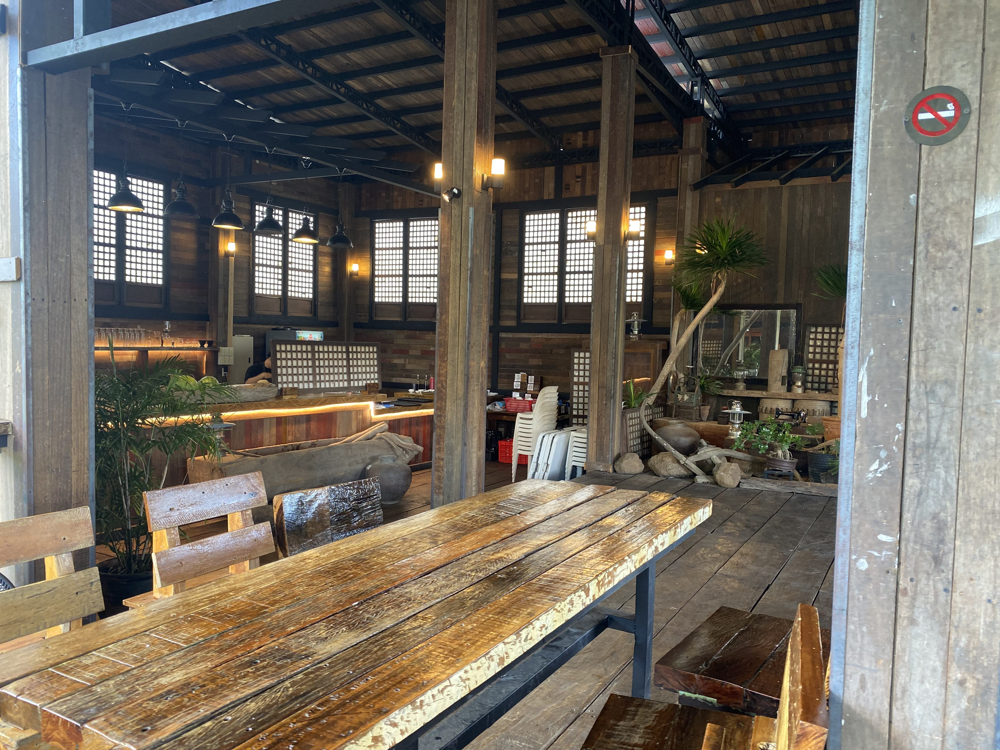
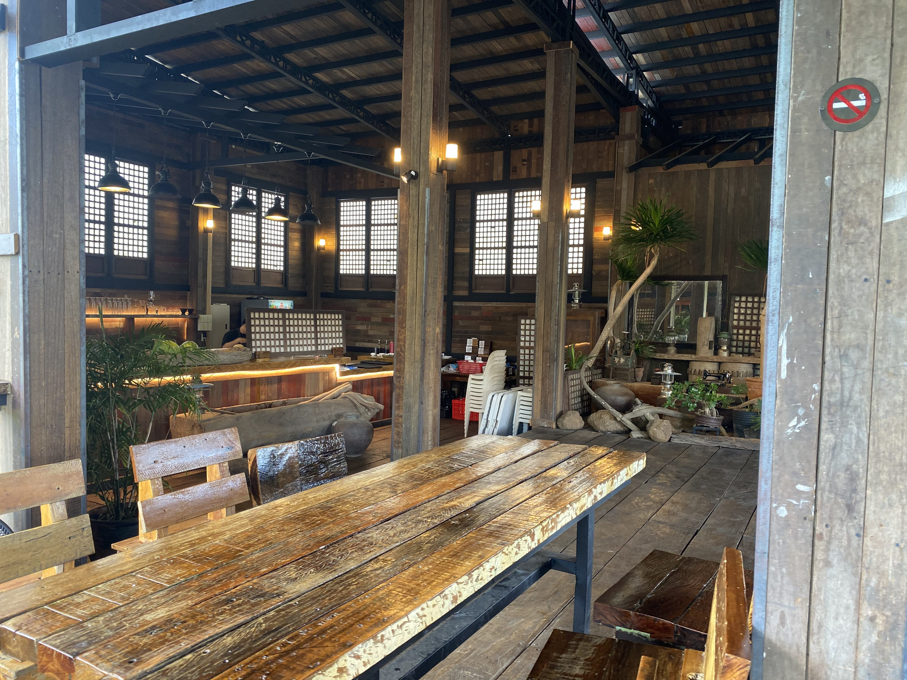

Altezza Cabins/ Altezza Restaurant
“Discover serenity nestled among the mountains. Our charming cabins offer an enchanting escape.”
Find peace and quiet among the mountains at Altezza Cabins. The cozy cabins provide a delightful escape for relaxation. Open daily from 11 A.M to 9 P.M, Altezza Restaurant offers authentic Kapampangan cuisine. Come and experience a blend of tradition and calmness at Altezza Cabins located at Orchard Village, Brgy. Ayala, Magalang, Pampanga.
Indulge in a variety of dishes, including pasta, sandwiches, and noodles ranging from ₱120.00 to ₱365.00, as well as delicious mains priced between ₱170.00 and ₱580.00. Satisfy your thirst with beverages such as coffee, beers, fruit shakes, juices, and desserts, which range from ₱80.00 to ₱250.00. For those looking to unwind further, Altezza Restaurant also offers a selection of liquors and wines available by the shot or by the bottle.
 

Constancios Magalang
Constancio's Magalang is known for providing an unforgettable dining experience with their mouthwatering dishes paired with unlimited rice and gravy. Their commitment is to offer a delicious variety of meals to suit every taste and budget. Starting with their sizzlers, they offer 15 options with unlimited rice and gravy for just ₱99.00. They also offer for-sharing meals ranging from ₱150.00 to ₱180.00, chef's specials from ₱120.00 to ₱200.00, starter specials from ₱150.00 to ₱180.00, milkshakes for only ₱100.00, and tsokolate batirol priced from ₱90.00 to ₱150.00.
Come and enjoy delicious and affordable food in a fully air-conditioned space with a beautiful ambiance. They are open Monday to Sunday from 10 AM until 9 PM, and are located next to Paras' Residence at 776 Luciano Street, Marbea Subdivision, Sta. Cruz, Magalang, Pampanga.
Cafe Adrianne
Cafe Adrianne offers an elegant and comfortable ambiance, perfect for a relaxing dining experience while enjoying delicious food in a calm setting. Indulge in a variety of drinks such as coffee, non-coffee options, horchata, blended drinks, signature milk tea, and refreshing beverages, all priced between ₱99.00 to ₱170.00. The menu also features breakfast items, starters, main courses, sandwiches, pasta dishes, and desserts, with prices ranging from ₱95.00 to ₱380.00, suitable for sharing among 2-3 persons.
Come and visit during opening hours: Monday to Thursday from 9:00 A.M to 10:00 P.M, and Friday to Sunday from 9:00 A.M to 10:30 P.M at Manabat’s Farm, San Nicolas I Magalang, Pampanga.
Constancios Magalang
Constancio's Magalang is known for providing an unforgettable dining experience with their mouthwatering dishes paired with unlimited rice and gravy. Their commitment is to offer a delicious variety of meals to suit every taste and budget. Starting with their sizzlers, they offer 15 options with unlimited rice and gravy for just ₱99.00. They also offer for-sharing meals ranging from ₱150.00 to ₱180.00, chef's specials from ₱120.00 to ₱200.00, starter specials from ₱150.00 to ₱180.00, milkshakes for only ₱100.00, and tsokolate batirol priced from ₱90.00 to ₱150.00.
Come and enjoy delicious and affordable food in a fully air-conditioned space with a beautiful ambiance. They are open Monday to Sunday from 10 AM until 9 PM, and are located next to Paras' Residence at 776 Luciano Street, Marbea Subdivision, Sta. Cruz, Magalang, Pampanga.
Fred's Cafe
Fred's Café offers a delightful range of drinks, snacks, and meals to satisfy every craving. Open daily from 10 AM to 11:30 PM, the café is located at San Nicolas 1, Magalang, Pampanga, on the left side of McDonald's.
Enjoy a variety of beverages, including coffee, tea, and smoothies, with prices ranging from ₱100.00 to ₱180.00. Pair your drink with tasty snacks and sandwiches available for ₱110.00 to ₱380.00. For a more substantial meal, explore their selection of hearty pastas and rice meals, priced from ₱220.00 to ₱400.00. Ordering online is quick and convenient; search for Fred's Café on Facebook, or reach them at 0908-813-4299, or through Magalang Food Ride.
"When life gives you hot days, make iced black coffee.”